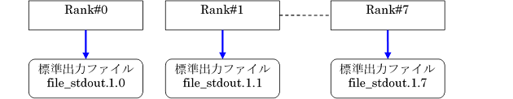
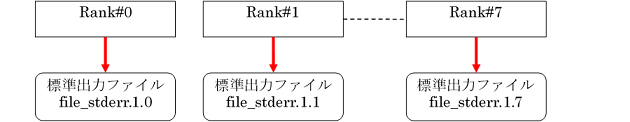
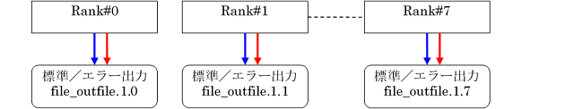
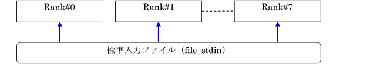

6.4. 標準出力／標準エラー出力／標準入力¶
MPIプログラムの標準出力／標準エラー出力／標準入力の指定方法を示します。
6.4.1. 標準出力／標準エラー出力／標準入力の指定方法¶
mpiexecでは、標準出力／標準エラー出力をファイルに出力するオプション、ファイルから標準入力を読み込むオプションを用意しています。
- 各並列プロセスとmpiexecコマンドの標準出力／標準エラー出力は、通常はジョブ運用ソフトウェアによって生成されるmpiexecコマンド実行結果ファイルに出力されます。デフォルト（出力オプション指定なし）の場合、カレントディレクトリに以下の命名規則で標準出力／標準エラー出力ファイルが生成されます。[標準出力ファイルの命名規則]./output.jobid/1000_ranks/mpiexec/stdout.mpiexec.rank[標準エラー出力ファイルの命名規則]./output.jobid/1000_ranks/mpiexec/stderr.mpiexec.rank「./output.jobid」配下には1000ランク毎にディレクトリが分割生成されます。1000ランク毎のディレクトリ配下にはmpiexecコマンドを実行した回数分のディレクトリが生成されます。
注釈
jobid の文字列は、ジョブIDを表したものです。
1000_ranks の文字列は、ランク番号やspawn番号を1000単位で切り捨てた番号を表したものです。
mpiexec の文字列は、ジョブスクリプト内で何回目の mpiexecコマンドの実行であるかを表したものです。
rank の文字列は、実際の MPI_COMM_WORLD でのランクを表したものです。
例１：ジョブID=9999、mpiexec実行1回目、ランク番号100の場合の標準出力ファイルパス./output.9999/0/1/stdout.1.100例２：ジョブID=9999、mpiexec実行2回目、ランク番号1500の場合の標準出力ファイルパス./output.9999/1000/2/stdout.2.1500mpiexec ./a.out
[_LNlogin]$ ls -F output.9999/ 0/ 1000/ 2000/ 3000/ ... [_LNlogin]$ ls -F output.jobid/0/ 1/ 2/ [_LNlogin]$ ls -F output.jobid/0/1/ stderr.1.0 stderr.1.1 ... stderr.1.999 stdout.1.0 stdout.1.1 ... stdout.1.999
mpiexecコマンドのオプション(
-std-proc/-of-proc、-stdout-proc/-ofout-proc、-stderr-proc/-oferr-proc)を指定して標準出力／標準エラー出力の出力先を変更した場合は、オプションを指定したmpiexecコマンドで実行する実行可能ファイルに対してのみ有効です。mpiexecコマンドのリダイレクション指定による標準入力は、各並列プロセスの標準入力として使用することはできません。
注意
-of/-std、-ofout/-stdout、-oferr/-stderrは指定できません。指定した場合はmpiexecコマンド実行時に以下のエラーが出力され、デフォルト設定が適用されます（ジョブ受付は可能）。[WARN] PLE 0605 plexec ignore option -ofout/-stdout(stdout outputs to <file_path>).-std-proc/-of-proc、-stdout-proc/-ofout-proc、-stderr-proc/-oferr-procは指定可能です。指定した場合の動作は後述の1～3を参照ください。
各並列プロセスの標準出力を別ファイルに出力します。
各並列プロセスからの標準出力は、
-stdout-procに指定したファイル名に、mpiexec実行回数とランク番号が付加された名前で出力されます。
$ mpiexec -stdout-proc file_stdout -n 8 ./a.out 注意
上記例の場合は標準エラー出力オプションが省略されているため、標準エラー出力についてはデフォルトのファイルパスで出力されます。
各並列プロセスの標準エラー出力を別ファイルに出力します。
各並列プロセスからの標準エラー出力は、
-stderr-procに指定したファイル名に、mpiexec実行回数とランク番号が付加された名前で出力されます。
$ mpiexec -stderr-proc file_stderr -n 8 ./a.out 注意
上記例の場合は標準出力オプションが省略されているため、標準出力についてはデフォルトのファイルパスで出力されます。
各並列プロセスの標準出力および標準エラー出力を別ファイルに出力します。
各並列プロセスからの標準出力／標準エラー出力は、
-std-procに指定したファイル名に、mpiexec実行回数とランク番号が付加された名前で出力されます。
$ mpiexec -std-proc file_outfile -n 8 ./a.out
並列プロセスの標準入力を指定ファイルから入力します。
標準入力を、
file_stdinから入力する例を示します。
$ mpiexec -stdin file_stdin -n 8 ./a.out
6.4.2. オプション指定による出力表¶
mpiexecコマンドの出力オプション指定の有無による、並列プロセスの標準出力と標準エラー出力の出力先の一覧を下表に示します。
mpiexecオプション指定 |
利用可否 |
標準出力 |
標準エラー出力 |
|---|---|---|---|
オプション指定なし |
- |
標準出力／標準エラー出力／標準入力の指定方法の"標準出力ファイルの命名規則"を参照(*1) |
標準出力／標準エラー出力／標準入力の指定方法の"標準エラー出力ファイルの命名規則"を参照(*2) |
-of/-std |
不可 |
*1と同様の出力(指定は無効) |
*2と同様の出力(指定は無効) |
-ofout/-stdout |
不可 |
*1と同様の出力(指定は無効) |
*2と同様の出力(指定は無効) |
-oferr/-stderr |
不可 |
*1と同様の出力(指定は無効) |
*2と同様の出力(指定は無効) |
-of-proc/-std-proc |
可能 |
指定したファイル名.mpiexec.rank |
指定したファイル名.mpiexec.rank |
-ofout-proc/-stdout-proc |
可能 |
指定したファイル名.mpiexec.rank |
*2と同様の出力 |
-oferr-proc/-stderr-proc |
可能 |
*1と同様の出力 |
指定したファイル名.mpiexec.rank |
注意
mpiexecコマンドのオプション設定については pjaclコマンドで参照可能です。
ユーザ側で mpiexecコマンドのオプション設定を変更することはできません。
6.4.3. 大規模ジョブ実行時の標準出力／標準エラー出力の指定について¶
「富岳」で、1万プロセス以上の大規模ジョブを実行する際は、大量のプロセスによる単一ファイルや同一ディレクトリへのアクセスの集中を防ぐための考慮が必要です。
デフォルトでは標準出力/標準エラー出力への出力がない場合はファイルを作成しません。
空ファイルを作成するか作成しないかは環境変数PLE_MPI_STD_EMPTYFILE={on|off}により設定することができます(デフォルトはoff)。
また、メタ文字を利用して出力先のディレクトリを分けることができます。ディレクトリを分けて、１ディレクトリ内のファイル数が多くならないように調整してください。
PLE_MPI_STD_EMPTYFILE=off(デフォルト)でもディレクトリは作成されます。
mpiexec -stdout-proc ./output.%j/%m/%/500r/stdout -stderr-proc ./output.%j/%m/%/500r/stderr ./a.out
[_LNlogin]$ ls -F output.jobid/
1/ 2/
[_LNlogin]$ ls -F output.jobid/1/
0/ 500/ 1000/ 1500/ ...
[_LNlogin]$ ls -F output.jobid/1/0/
stderr.1.0 stderr.1.1 ... stderr.1.499
stdout.1.0 stdout.1.1 ... stdout.1.499
ここで使用したメタ文字の意味は次の通りです。
メタ文字 |
意味 |
|---|---|
%j |
ジョブID |
%m |
mpiexec実行回数 |
%r |
ランク番号とspawn番号
静的プロセスの場合:ランク番号
動的プロセスの場合:ランク番号@spawn番号
出力先がmpiexecコマンド単位の場合は、空文
|
%/Nr |
ランク番号やspawn番号を数値N単位で切り捨てます
上記の例ではN=500として使用しています
|
mpiexecコマンドの出力先ファイル名で使用できるメタ文字の詳細については、マニュアル「ジョブ運用ソフトウェア エンドユーザ向けガイド」の「2.3.6.9 mpiexecコマンドの標準出力/標準エラー出力 [FX]」を参照ください。